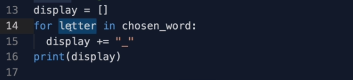
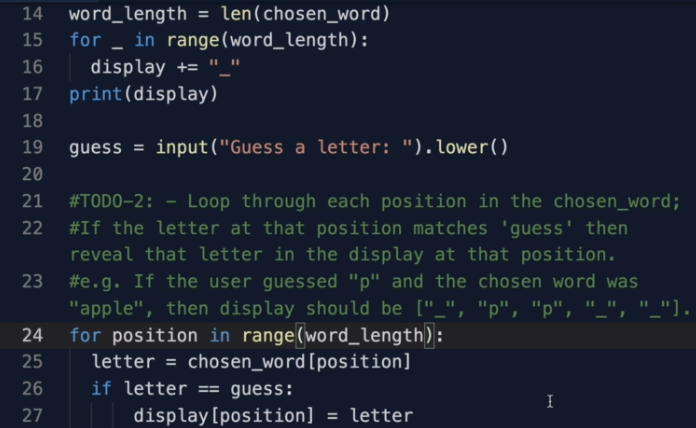
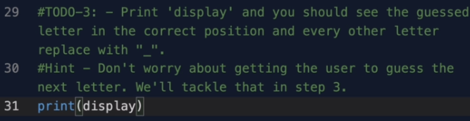

الان دعنا نحل مراحل التحدي الثاني معا وسوف نبدأ بالمرحلة الاولى و الهدف هو ان اصنع قائمة تسمى display و من اجل كل حرف في ال chosen_word وهو عبارة عن كلمة عشوائية سوف نضيف الرمز "_" للقائمة display فاذا كانت الكلمة apple فالقائمة يجب ان يكون فيها خمس فراغات تمثل كل واحدة حرفا على المستخدم ان يحزره اولا نصنع قائمة فارغة باستخدام [] ثم نضيف حلقة for بحيث من اجل كل حرف في الكلمة المختارة نضيف للقائمة display فراغا "_"

ولكن لو تلاحظ اننا لانستعمل المتغير
letter
نحن ندور حول الكلمة وفي كل مرة مرة
letter
تاخذ حرف من الكلمة ولكننا لانفعل به شيئا
و في الحقيقة يمكننا تبديله ب
_
هناك حل افضل وهو استعمال الدالة
range
بحيث نمرر طول الكلمة داخلها وسوف تدور الحلقة بعدد الاحرف في الكلمة
لايهم اي الطريقتين استخدمت الاختيار لك كلاهما يعمل بنفس الطريقة
الان ننتقل للمرحلة الثانية بحيث سوف نقوم بالدوران حول جميع الحروف في
الكملة المختارة ونتحقق ان كان الحرف الذي حزره المستخدم في الكلمة
ونقوم بتبديل الفراغ بذلك الحرف في ذلك المكان
ربما هذا هو اصعب جزء لحد الان لانه علينا تغيير حلقة ال
for
السابقة لنجعلها تستعمل دالة ال
range
لاننا نريد معرفة مكان الحرف وهذه الاخيرة ترجع اعداد نستعملها كمؤشرات
لاماكن الحروف في القائمة وتغيير الفراغ بالحرف
دعني اريك كيف تفعل ذلك
فنقول من اجل كل مكان الحرف او موقعه في مجال ونمرر طول الكلمة
وهكذا المتغير
position
سوف يأخذ الاعداد من صفر الى طول الكلمة ناقص واحد
وهي بالضبط اماكن الحروف في الكلمة المختارة
و المتغير
letter
يصبح الحرف في الكلمة المختارة عند المؤشر
position
ونكتب ذلك باستعمال ال
[]
كما ترى في الصورة
فاذا كان الحرف هو نفسه او مطابق مع الحرف الذي حزره المستخدم
نجعل العنصر في هذه الحالة هو حرف في القائمة
display
عند المؤشر
position
ونجعله يساوي ال
letter
و ال
else
لانحتاجها بعد الان
نحن نستعمل طول الكلمة في اماكن عديدة في الكود الخاص بنا فلو اردت جعل الكود الخاص بك بسيط وسهل نوعا ما يمكنن اضافة متغير word_length وجعله يساوي طول الكلمة واستعمله في كل مكان تحتاجه
في المرحلة الاخيرة كل ماعلينا فعله هو طباعة القائمة display وعندما نشغل البنامج الخاص بنا سوف يعمل كما راينا في الاول
